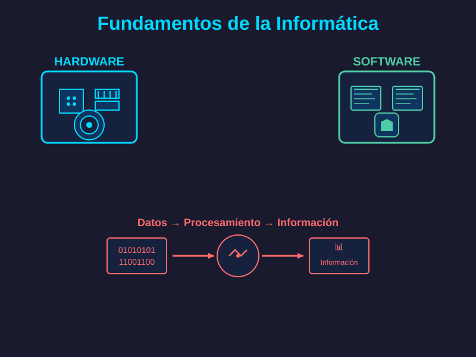

Definición:Ciencia que estudia el tratamiento automático de la información mediante computadoras, combinando aspectos teóricos (algoritmos, lógica) y prácticos (programación, sistemas).
Componentes básicos: Hardware (componentes físicos como procesadores, memoria) y software (programas, sistemas operativos, aplicaciones).
Datos e información: Transforma datos brutos en información útil mediante procesos de entrada, procesamiento, almacenamiento y salida.

Desarrollo de software: Creación de aplicaciones, sistemas operativos y programas usando lenguajes de programación (Python, Java, C++, etc.).
Redes y comunicaciones: Conexión de sistemas mediante internet, protocolos de comunicación, seguridad informática y computación en la nube.
Inteligencia artificial y datos: Machine learning, análisis de big data, automatización y sistemas inteligentes que aprenden y toman decisiones.
Transformación social: Ha revolucionado la comunicación, el trabajo, la educación y el entretenimiento, conectando globalmente a personas e instituciones.
Sectores clave: Medicina (diagnósticos, telemedicina), finanzas (banca digital), industria (automatización, IoT), ciencia (simulaciones, investigación).
Futuro: Computación cuántica, IA avanzada, realidad virtual/aumentada, blockchain y nuevos paradigmas tecnológicos en desarrollo continuo.
<